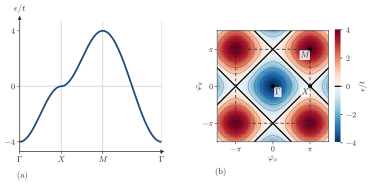
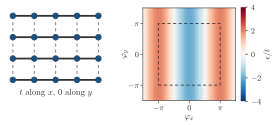

Advanced Quantum Materials 2027 · All lectures · Lecture notes
Session 2. Symmetries, Tight-Binding Band Structure Theory, and Effective Models
2.8 Higher-dimensional band structures
What changes in a band structure when the lattice has two or three directions? We will now see that there is one Bloch phase for each direction and that the Brillouin zone becomes a torus. Each direction of hopping adds one cosine to the band, which gives (2.14) for the square lattice and (2.15) for the cubic lattice.
\[H = -t\sum_\varphi \left(e^{i\varphi}+e^{-i\varphi}\right)\Psi_\varphi^\dagger\Psi_\varphi = \sum_\varphi \epsilon_\varphi\, \Psi_\varphi^\dagger\Psi_\varphi, \qquad \boxed{\epsilon_\varphi = -2t\cos\varphi}. \tag{2.8}\]
This is the band of the chain of Section 2.5, with the hopping \(-t\) between first neighbors of (2.5) and \(t>0\). The phase \(\varphi\) is the Bloch phase of the state (2.6), which has the amplitude \(e^{in\varphi}\) on the site \(n\), and \(\varphi=ka\) is the crystal momentum \(k\) times the lattice constant \(a\), as in (2.10).
A two-dimensional lattice has two independent translations that commute with each other, \(T_x\) and \(T_y\), so Bloch eigenstates have two independent phases, \(\varphi_x\) and \(\varphi_y\), one for each direction. These phases are related to the crystal momentum along the two lattice vectors by the same Taylor-expansion argument as in (2.10), applied once for each direction. The space of allowed pairs \((\varphi_x,\varphi_y)\) is the Brillouin zone. Since \(\varphi=0\) and \(\varphi=2\pi\) give the same translation eigenvalue in both directions, the Brillouin zone is not an open square but a periodic one. When we identify the left and right edges, and the top and bottom edges, it becomes a torus, in the same way as it is a circle in the one-dimensional case of Section 2.5. This compactness of the Brillouin zone is what makes the topological invariants of Session 3 integers, as we will see in Section 3.5.
We now apply the Fourier method of Section 2.5 once for each spatial direction. For a square lattice with a single orbital and nearest-neighbor hopping \(t\), with the sign convention of (2.5), we obtain the band in the box below.
For the square lattice with one orbital and the hopping \(-t\) between first neighbors, the band is
\[\epsilon(\varphi_x,\varphi_y) = -2t\left(\cos\varphi_x + \cos\varphi_y\right). \tag{2.14}\]
Each direction of hopping adds one cosine. So the band goes from \(-4t\) at \(\Gamma=(0,0)\) to \(4t\) at \(M=(\pi,\pi)\), and its width grows by \(4t\) for each direction, from \(4t\) in the chain to \(8t\) here.
The steps From the square lattice to the band (2.14)
We label the sites of the square lattice by two integers \((n,m)\), and each site has one bond along \(x\) and one along \(y\),
\[H = -t\sum_{n,m}\left(c_{n,m}^\dagger c_{n+1,m} + c_{n,m}^\dagger c_{n,m+1} + \text{h.c.}\right).\]
The translations along \(x\) and along \(y\) commute with \(H\) and with each other. So we take the state (2.6) once for each direction, with the amplitude
\[\psi_{n,m} = e^{i(n\varphi_x + m\varphi_y)}\]
on the site \((n,m)\). Let us start with the bonds along \(x\) alone, which make each row a chain (2.5). They bring to the site \((n,m)\) the amplitudes of its two neighbors \((n\pm1,m)\), so
\[-t\left(\psi_{n+1,m} + \psi_{n-1,m}\right) = -t\left(e^{i\varphi_x} + e^{-i\varphi_x}\right)\psi_{n,m} = -2t\cos\varphi_x\,\psi_{n,m},\]
which is the band (2.8) of one row. The bonds along \(y\) do the same with the neighbors \((n,m\pm1)\), and they give \(-2t\cos\varphi_y\,\psi_{n,m}\). The two terms add, so \(H\psi=\epsilon\,\psi\) with the energy (2.14). A bond changes only one of the two indices, which is why each direction gives its own cosine and the two do not mix. The cubic lattice has a third bond per site, along \(z\), which adds \(-2t\cos\varphi_z\) and gives (2.15).
When we apply the same argument a third time, for a cubic lattice with a single orbital, the band is
\[\epsilon(\varphi_x,\varphi_y,\varphi_z) = -2t\left(\cos\varphi_x+\cos\varphi_y+\cos\varphi_z\right). \tag{2.15}\]
The same method extends in a systematic way to four, five or more dimensions, since nothing in the argument depends on being in three-dimensional space. The notebook session2.ipynb has no section for (2.14) and (2.15), since its two-dimensional example goes directly to the honeycomb lattice of Section 2.11. To check them numerically, we use the construction of the honeycomb lattice in the box below, with a square or cubic lattice with a single orbital instead.
Schematic 2.9 shows the band of (2.14), computed with pyqula, and the script under it gives the same band to change and run.

g3_square_lattice.py
Before we continue, let us say explicitly that everything above applies far beyond electrons. The same Bloch-Hamiltonian method diagonalizes phonon bands, magnon bands and the bands of Bogoliubov-de Gennes quasiparticles in a superconductor. It applies in the same way to artificial lattices that are engineered and have no relation to real crystals, such as cold atoms trapped in optical lattices. We will focus on electronic bands for concreteness, but this generality is the reason why the same method appears again, for Bogoliubov quasiparticles in Section 5.8 and for magnons in Section 6.15. The physics that single-particle band theory gives in this way is very rich. It includes Dirac fermions with zero Dirac mass, Weyl semimetals, which are Dirac points generalized to higher dimensions, quantum spin Hall insulators, Chern insulators, crystalline topological phases and topological superconductors. All of this is built only on the Bloch Hamiltonian \(H(\mathbf{k})\) that we constructed here.
The cubic lattice has the band
\[\epsilon(\varphi_x,\varphi_y,\varphi_z) = -2t\left(\cos\varphi_x+\cos\varphi_y+\cos\varphi_z\right).\]
What is its width, from the lowest to the highest energy?
Show the answers
- A. ✗ False
This is false. The width \(4t\) is the one of the chain band \(-2t\cos\varphi\), from \(-2t\) to \(2t\). In the cubic lattice, at \(\varphi_x=\varphi_y=\varphi_z=0\) the energy is \(-6t\), which is below \(-2t\).
- B. ✗ False
This is false. The width \(8t\) is the one of the square lattice, from \(-4t\) to \(4t\). The cubic lattice has a third cosine, which gives \(-6t\) and \(+6t\) at the two ends.
- C. ✓ True
This is true. The lowest energy is at \(\varphi_x=\varphi_y=\varphi_z=0\), where all three cosines are \(1\) and the energy is \(-6t\). The highest is at \(\pi\) in every direction, which gives \(+6t\), so the width is \(12t\).
The width grows by \(4t\) for each new direction of hopping.
The square lattice has the band
\[\epsilon(\varphi_x,\varphi_y) = -2t\left(\cos\varphi_x + \cos\varphi_y\right).\]
We switch off the hopping along \(y\). Which map shows the new band over the zone? The dashed square is the first zone. Blue is \(-4t\), white is zero and red is \(4t\).
Show the answers
- A. ✗ False
This is false. This band depends only on \(\varphi_y\), so it belongs to chains along \(y\). In our lattice, fix \(\varphi_y=0\). Then \(\epsilon=-2t\cos\varphi_x\) gives \(-2t\) at \(\varphi_x=0\) and \(+2t\) at \(\varphi_x=\pi\), so the energy does change with \(\varphi_x\).
- B. ✓ True
This is true. Without hopping along \(y\) the lattice is a set of decoupled chains along \(x\). Each chain has the band (2.8), now \(-2t\cos\varphi_x\), and nothing depends on \(\varphi_y\).

A square lattice without hopping along \(y\). On the left, the dashed lines are the bonds that are switched off, so the lattice is a set of chains. On the right, the energy \(-2t\cos\varphi_x\) with \(t=1\), drawn up to \(|\varphi_x|,|\varphi_y|=3\pi/2\) with the first zone dashed, on the same color scale as the options. The colors form stripes that do not change along \(\varphi_y\). \[H = -t\sum_\varphi \left(e^{i\varphi}+e^{-i\varphi}\right)\Psi_\varphi^\dagger\Psi_\varphi = \sum_\varphi \epsilon_\varphi\, \Psi_\varphi^\dagger\Psi_\varphi, \qquad \boxed{\epsilon_\varphi = -2t\cos\varphi}. \tag{2.8}\]
- C. ✗ False
This is false. This is the band with both hoppings. At \(\varphi_x=0\) it goes from \(-4t\) at \(\varphi_y=0\) to \(0\) at \(\varphi_y=\pi\). Without the hopping along \(y\) the energy stays at \(-2t\) along this line.
The energy depends only on the directions along which the electron can hop.
We add the hopping \(-t'\) along the diagonals of the square lattice, between the site \((n,m)\) and its four neighbors \((n\pm1,m\pm1)\). Find the band \(\epsilon(\varphi_x,\varphi_y)\), and its values at \(\Gamma=(0,0)\), \(X=(\pi,0)\) and \(M=(\pi,\pi)\).
Solution
We take the Bloch state \(\psi_{n,m}=e^{i(n\varphi_x+m\varphi_y)}\), as for (2.14). The four diagonal neighbors bring
\[-t'\sum_{s,s'=\pm1}e^{i(s\varphi_x+s'\varphi_y)}\,\psi_{n,m} = -t'\left(e^{i\varphi_x}+e^{-i\varphi_x}\right)\left(e^{i\varphi_y}+e^{-i\varphi_y}\right)\psi_{n,m} = -4t'\cos\varphi_x\cos\varphi_y\,\psi_{n,m},\]
since the sum over the four corners factorizes. This term adds to the two cosines of (2.14), so
\[\epsilon(\varphi_x,\varphi_y) = -2t\left(\cos\varphi_x+\cos\varphi_y\right) - 4t'\cos\varphi_x\cos\varphi_y.\]
At \(\Gamma\) all the cosines are \(1\), and \(\epsilon=-4t-4t'\). At \(X\) we have \(\cos\varphi_x=-1\) and \(\cos\varphi_y=1\), so the first term vanishes and \(\epsilon=4t'\). At \(M\) both cosines are \(-1\), and \(\epsilon=4t-4t'\). So \(t'\) moves the energy of \(X\) from zero to \(4t'\).
The three values are a quick test of a numerical band structure. In pyqula this band is tij=[-1.0,-tp], with tp the value of \(t'\), since the diagonal neighbors are the second neighbors of the square lattice. With tp=0.3 it gives \(-5.2\), \(1.2\) and \(2.8\) at \(\Gamma\), \(X\) and \(M\).
Try it. In the cell of the band structure, replace the honeycomb lattice by geometry.square_lattice(). Check that the band goes from \(-4t\) to \(4t\), which is the range of (2.14). The notebook uses the opposite sign of the hopping, so the two extremes are exchanged.
- The torus of the Brillouin zone makes the Chern number of Section 3.5 an integer.
- The same Bloch method gives the BdG bands of Section 5.8, the magnon bands of Section 6.15 and the topological magnon bands of Section 6.16.
- The band (2.14) of the square lattice comes back at half filling in Section 9.4b, where its Fermi surface is nested.